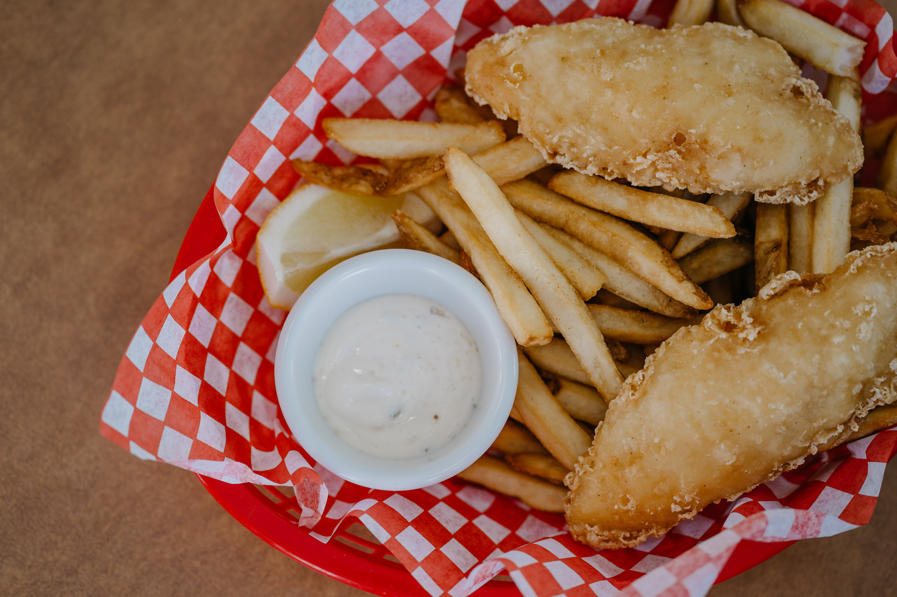

Fish and Chips

For when you get homesick
Just make yourself some fish and chips, turn on the fan and pretend your at the shore. Works every time.
Ingredients
- 2 quarts vegetable oil for frying
- 8 (4 ounce) fillets cod
- salt and pepper to taste
- 1 cup all-purpose flour
- 2 tablespoons garlic powder
- 2 tablespoons paprika
- 2 teaspoons salt
- 2 teaspoons ground black pepper
- 1 egg, beaten
- 1 (12 fluid ounce) can or bottle beer
Steps
- Heat oil in a deep fryer to 365 degrees F (185 degrees C). Rinse fish, pat dry, and season with salt and pepper.
- Combine flour, garlic powder, paprika, 2 teaspoons salt, and 2 teaspoons pepper. Stir egg into dry ingredients. Gradually mix in beer until a thin batter is formed. You should be able to see the fish through the batter after it has been dipped.
- Dip fish fillets into the batter, then drop one at a time into hot oil. Fry fish, turning once, until both sides are golden brown. Drain on paper towels, and serve warm.
This recipe can be found here.